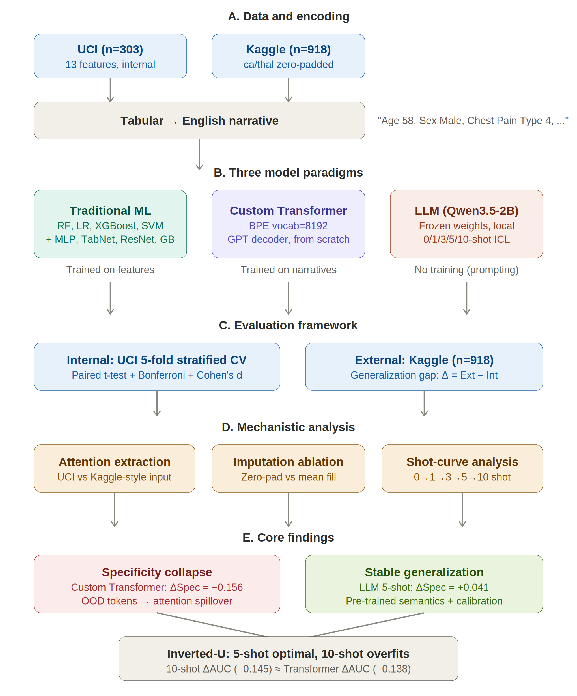
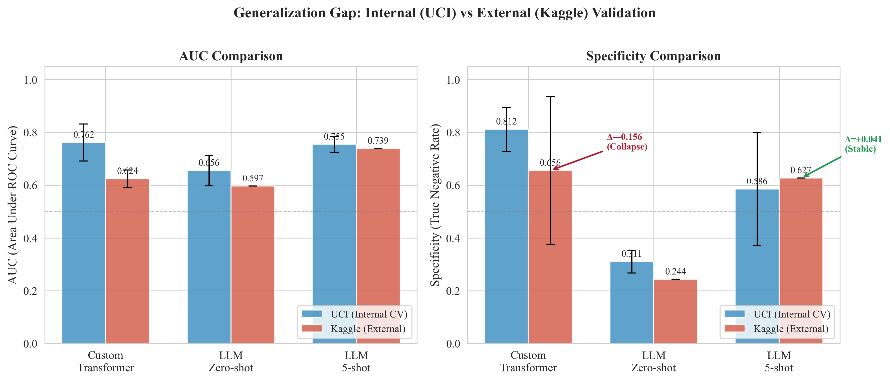
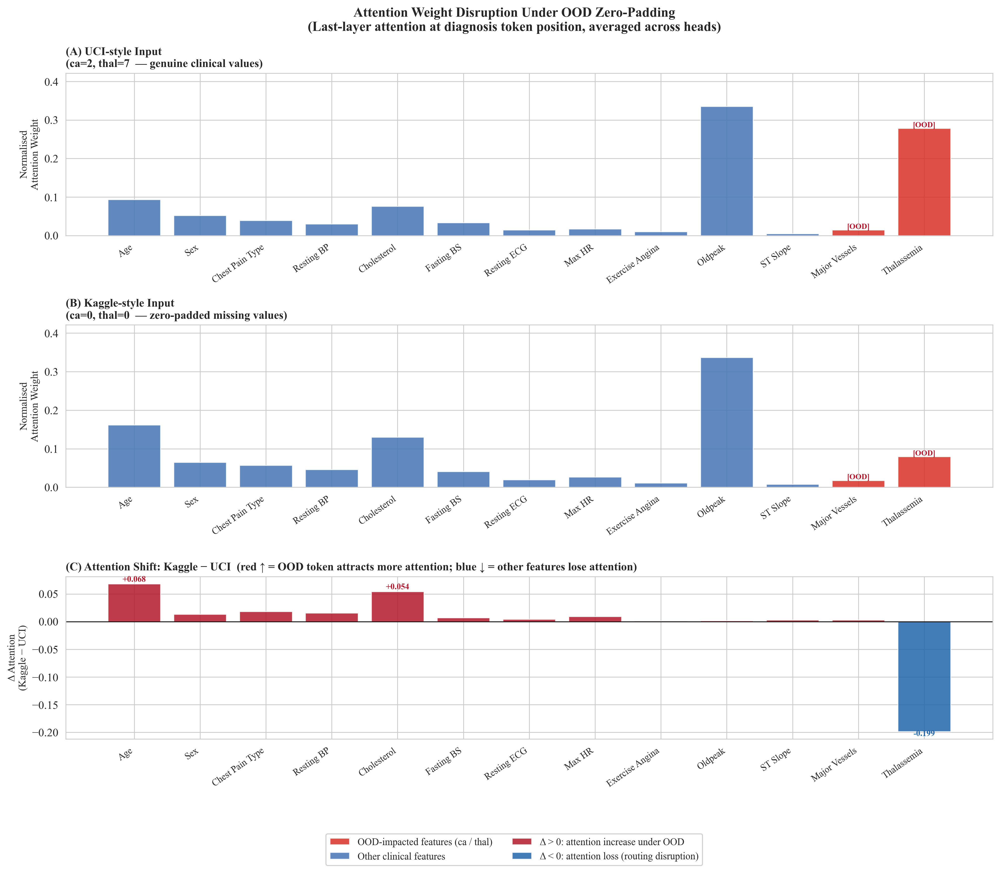
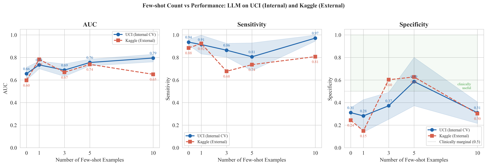

A compact project page for a clinical prediction case study comparing a tabular-to-text Transformer, prompted LLMs, and strong tabular baselines under external schema alignment shift.
The project asks how different clinical prediction pipelines fail when they leave their training distribution. Internal evaluation uses UCI Heart Disease (`n=303`). External evaluation uses the Kaggle Heart Failure Prediction dataset (`n=918`), aligned to the UCI schema by introducing `ca=0` and `thal=0`.
Each figure is shown at full width without cropping.

Overview of the Transformer path, the prompted LLM path, and the internal versus external evaluation design.

Internal versus external performance shows the Transformer's specificity drop and the stronger 5-shot LLM external profile.

A controlled comparison suggests the aligned external `thal=0` token can redirect attention away from a clinically informative field.

The prompted LLM follows a non-monotonic curve: zero-shot bias, improved 5-shot calibration, then degradation again at 10-shot.
This page is meant to function as a clean public landing page for the project: one title, one summary, four figures, and direct links to the manuscript draft, repo, and OSF submission materials.